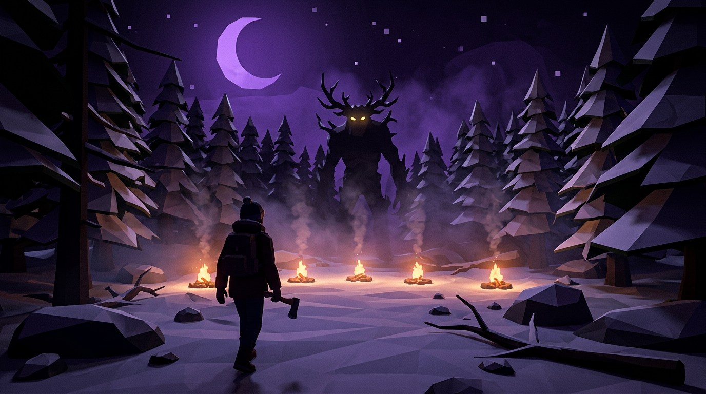
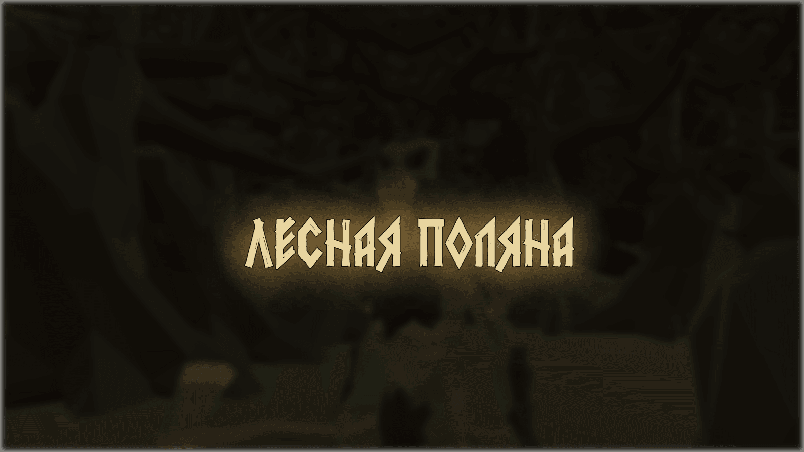
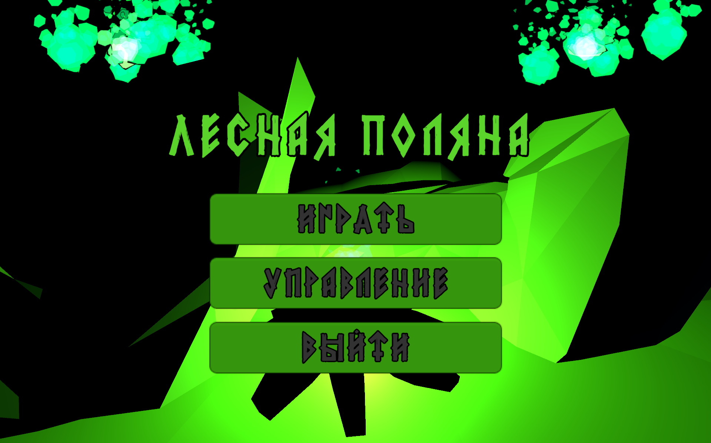
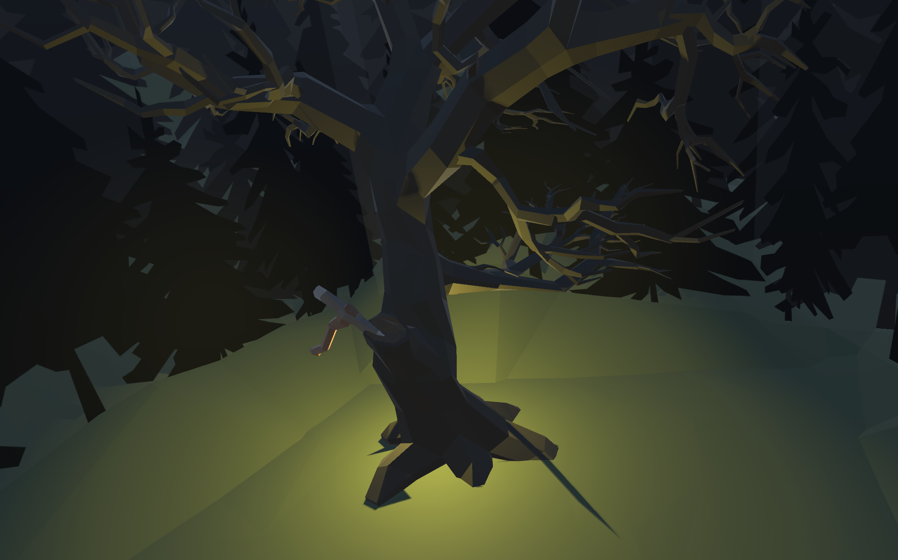
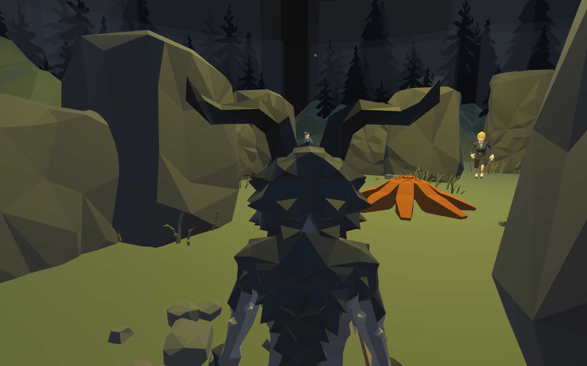

3D-экшен · топор · пять костров · ярость
Ночной лес, топор в руках и пять костров, которые нужно зажечь друг за другом. Волны противников ломятся на поляну, Леша шепчет свои фразы, а способность «Ярость» на ПКМ превращает заход в мясорубку. Прокачай топор до 4 уровня и доведи дело до финального огня!
«Лесная поляна» — 3D-экшен на Unity, где ты берёшь топор и выходишь на поляну в центре леса. Здесь нет длинного сюжета — только чистый цикл: бей, прокачивай, зажигай костры. Игра начинается с обучения, дальше — основной заход, а в конце ждет сцена победы с финальным костром.
Противники спавнятся волнами по точкам вокруг поляны: одни убегают, другие лезут в бой и наносят урон — следи за здоровьем. За каждое поражение продвигается общий счётчик: GameManager следит, сколько NPC уже повержено, и не откроет финал, пока не набрано нужное число.
Главный инструмент — топор с 4 уровнями прокачки: с каждым уровнем растёт урон, а на третьем — скорость атаки удваивается. А когда совсем туго, включай «Ярость» (правая кнопка мыши): на несколько секунд урон и скорость взлетают вверх, кулдаун и статус способности видны на экране. Пока ярость копится — бей аккуратнее, дождись готовности.
Атмосферу задают фразы Лешего — лесной дух комментирует происходящее (громкость его реплик настраивается отдельно в настройках звука вместе с музыкой, шагами и звуками атак).
Противники спавнятся вокруг поляны — отбивайся топором.
4 уровня: урон растёт, на 3-м уровне скорость атаки ×2.
Пять костров по очереди — пятый открывает финал.
ПКМ: временные множители урона и скорости, потом кулдаун.
Набери убийства и зажги финальный огонь — финал.
Требования: Windows 10/11 (64-bit), любой современный ПК. Интернет не нужен.
Обложка и скриншоты из игры: титул, меню, ночной лес и Леша у костра.





Полный билд для Windows: распакуй архив и запусти
лесная поляна/leshiu.exe. Тот же файл лежит на Google Drive.